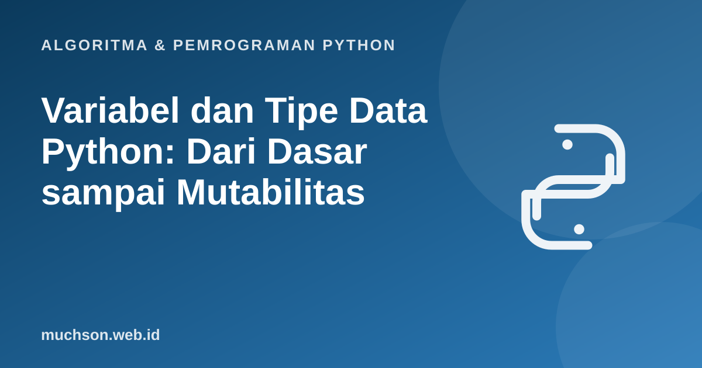

Beranda › Artikel › Algoritma & Pemrograman Python
Algoritma & Pemrograman PythonVariabel dan Tipe Data Python: Dari Dasar sampai Mutabilitas
Di Python, variabel bukan "kotak yang berisi nilai", melainkan nama yang menunjuk ke sebuah objek. Perbedaan kecil ini menjelaskan banyak kejadian membingungkan, misalnya mengapa mengubah satu list bisa ikut mengubah list lain. Materi ini membangun pemahaman yang benar dari awal.
Sebaiknya sudah paham: menjalankan script Python

Setelah membaca dan mencoba materi ini, Anda mampu:
- menjelaskan variabel sebagai nama yang menunjuk objek
- memakai tipe data dasar: int, float, str, bool, dan None
- melakukan konversi tipe secara eksplisit dan menghindari kesalahan umum
- menjelaskan mengapa 0.1 + 0.2 tidak persis 0.3
- membedakan objek mutable dan immutable dan dampaknya pada penugasan
Variabel adalah nama, bukan kotak
x = 10
y = x
print(id(x) == id(y)) # True: satu objek yang sama
y = 99 # y sekarang menunjuk objek lain
print(x, y) # 10 99True
10 99
Aturan penamaan
- Boleh berisi huruf, angka, dan garis bawah, tidak boleh diawali angka.
- Peka huruf besar-kecil:
nilaidanNilaiberbeda. - Tidak boleh memakai kata kunci seperti
if,for,class. - Konvensi PEP 8:
snake_caseuntuk variabel dan fungsi,HURUF_BESARuntuk konstanta. - Pilih nama yang menjelaskan isi:
jumlah_siswalebih baik daripadajs.
Tipe data dasar
| Tipe | Contoh | Keterangan |
|---|---|---|
| int | 42, -7, 10**30 | Bilangan bulat, ukuran tidak dibatasi selain memori |
| float | 3.14, 2.5e-3 | Bilangan pecahan presisi ganda (IEEE 754) |
| str | "halo", 'dunia' | Teks (urutan karakter Unicode), immutable |
| bool | True, False | Subkelas dari int: True bernilai 1, False bernilai 0 |
| NoneType | None | Menyatakan "tidak ada nilai" |
print(type(42), type(3.14), type("halo"), type(True), type(None))
print(2 ** 100) # int Python tidak meluap
print(7 / 2, 7 // 2, 7 % 2) # pembagian biasa, bulat, sisa
print(True + True) # bool adalah int<class 'int'> <class 'float'> <class 'str'> <class 'bool'> <class 'NoneType'>
1267650600228229401496703205376
3.5 3 1
2
Konversi tipe
Python tidak mengubah teks menjadi angka secara diam-diam. input() selalu menghasilkan str, sehingga perlu dikonversi.
umur_teks = "17"
print(umur_teks + "1") # penggabungan teks: 171
print(int(umur_teks) + 1) # penjumlahan: 18
print(float("3.5"), str(99), bool(0), bool("a"))
print(int(3.9), round(3.9)) # int memotong, round membulatkan171
18
3.5 99 False True
3 4
Mengapa 0.1 + 0.2 bukan 0.3?
Komputer menyimpan float dalam biner. Seperti 1/3 yang tidak bisa ditulis habis dalam desimal, 0.1 tidak bisa dinyatakan persis dalam biner. Selisih sangat kecil muncul.
print(0.1 + 0.2)
print(0.1 + 0.2 == 0.3)
import math
print(math.isclose(0.1 + 0.2, 0.3))
from decimal import Decimal
print(Decimal("0.1") + Decimal("0.2"))0.30000000000000004
False
True
0.3
Jangan membandingkan float dengan ==. Gunakan math.isclose. Untuk uang, pakai Decimal atau simpan dalam satuan terkecil (sen) sebagai int.
Mutable dan immutable
Objek immutable (int, float, str, tuple, bool) tidak dapat diubah setelah dibuat. Objek mutable (list, dict, set) dapat diubah di tempat. Perbedaan ini tampak jelas saat dua nama menunjuk objek yang sama.
1. Apa keluaran kode berikut? x = [1, 2]; y = x; y.append(3); print(x)
[1, 2, 3]. x dan y menunjuk list yang sama, sehingga perubahan lewat y terlihat lewat x.2. Mengapa int("3.5") menimbulkan ValueError, sedangkan int(float("3.5")) berhasil?
3. Tulis ekspresi yang menghasilkan sisa pembagian 29 oleh 6, dan hasil bagi bulatnya.
29 % 6 adalah 5, dan 29 // 6 adalah 4 (karena 6 × 4 + 5 = 29).4. Mengapa 0.1 * 3 == 0.3 bernilai False? Bagaimana memeriksanya dengan benar?
math.isclose(0.1 * 3, 0.3).- Variabel adalah nama yang menunjuk objek, bukan wadah nilai.
- Tipe dasar: int, float, str, bool, None. Konversi dilakukan eksplisit.
- Float tidak presisi persis; gunakan isclose atau Decimal.
- Immutable tidak dapat diubah; mutable dapat, dan penugasan hanya menunjuk objek yang sama.
Tanya jawab
Apakah Python bertipe dinamis?
Apa bedanya = dan ==?
Kapan memakai is dan kapan ==?
== membandingkan nilai, is memeriksa apakah dua nama menunjuk objek yang sama. Gunakan is terutama untuk membandingkan dengan None.Referensi
- Dokumentasi Python: Data Model (objek, nilai, dan tipe)
- Dokumentasi Python: An Informal Introduction to Python
- Dokumentasi Python: Floating-Point Arithmetic: Issues and Limitations
- PEP 8, Style Guide for Python Code
- Allen B. Downey, Think Python (edisi ke-3), buku teks terbuka